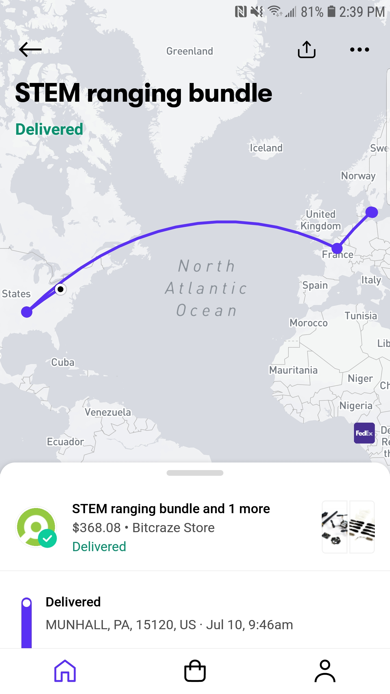
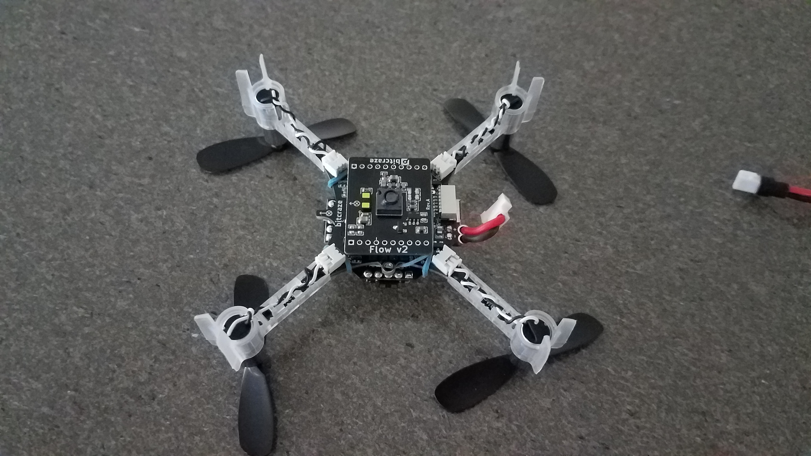
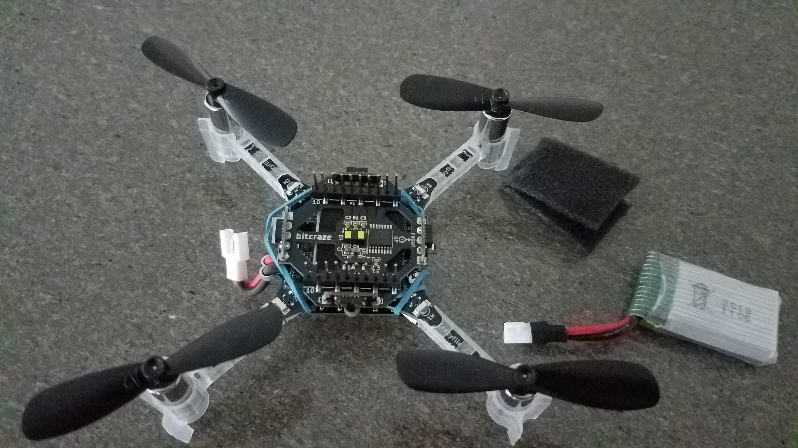
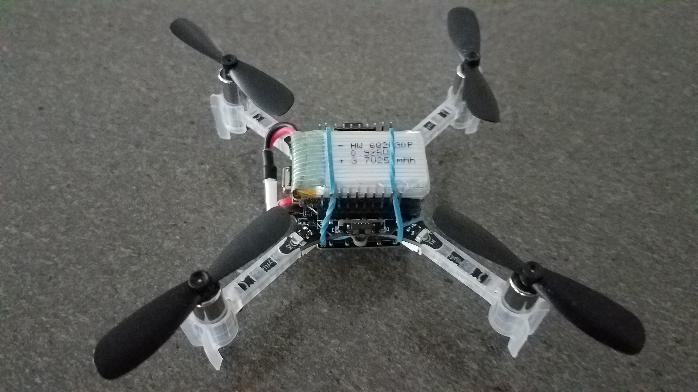

I’m in the process of wrapping up my Flying Car and Autonomous Flight Engineer Udacity nanodegree and thought of sharing my experience in porting some of the projects to a real drone a.k.a. UAV (Unmanned Aerial Vehicle). However, before porting any code to a UAV, I had to buy an UAV. Deciding on a specific UAV to buy was a hard decision to make since there are so many options. Someone like me starting out in this space of UAVs would have many questions. Among them, two major questions I had were: Should I build my own UAV? OR Should I buy a ready-to-fly UAV?
After some searching around, I realized that one should answer the question Do you plan to use the UAV indoors or outdoors? to make any buying decision. If your answer is indoors, a micro-UAV is a good option for safety and ease of maneuverability. Since I had no intention of flying the UAV outdoors, I preferred a micro-UAV. If your answer is outdoors, you can still get a micro-UAV but prefer a sturdy one so that it can withstand the cross-winds without crashing! There are great blogs such as How to Build FPV Drone outlining various choices and the building process.
I chose Crazyflie since:
- Crazyflie2.1 is ready-to-fly once you assemble it – this meant that I don’t have to invest any time to work with the hardware and focus my attention on the nanodegree I was about to start
- Crazyflie2.1 is both open to hardware and software extensions. Many research groups around the world use Crazyflie as their UAV platform to develop new technologies
- Crazyflie2.1 has a python client with great API documentation and examples – this is a low barrier for entry to those who are not familiar with flight stack implementation in C or C++
- Crazyflie2.1 weights only 27 grams and has a maximum recommended payload of 15 grams which makes it less intimidating when flying indoors
- Crazyflie2.1 parts are relatively inexpensive to replace (believe me, you will crash and break at least the propellers :) ) but they all ship from Sweden – plan ahead by ordering additional spare parts when you buy Crazyflie
- Crazyflie2.1 offered me the least time to make my nanodegree projects work on a real aerial vehicle enabling me to invest all my time understanding the projects and focus on software design and implementation
Getting Crazyflie
Once I decided on the vehicle, I ordered Crazyflie2.1 from their website. I was excited and tracking it all the way from its home in Sweden to its new home here in Pittsburgh, United States. Crazyflie2.1 finally arrived!

Assembly
To understand the rationale for the suggested assembly, please refer the Hot-swap battery arrangement section. We need an assembly that minimizes hardware stress when we want to replace the battery. This implies that we don’t want to pull out the multi-ranger deck every time we want to replace the battery.
There are already great instructions on assembly and making first flight on Crazyflie website here. Here, I will highlight the differences for the hot-swap friendly assembly.
Here is the crazyflie base after partial assembly. You need to pay attention to the propeller naming and the direction of propeller rotation while performing this assembly (already described well here).

Adding the flow-deck
Flow deck allows the crazyflie to approximate it’s position along the horizontal direction (x and y direction) using a camera that faces down to the floor. This gives a “sense” of lateral position awareness to Crazyflie. Further, the flow-deck has an additional sensor to measure height giving Crazyflie a “sense” of height from the ground (z direction). With flow-deck added, Crazyflie now can approximate it’s 3D position when flying allowing it to be commanded to new position in 3D coordinates.

Adding the multi-ranger deck
Multi-ranger deck is fitted on top of the Crazyflie but all the way down the pin unlike what is shown on Crazyflie website. That is, we place the battery on top of multi-ranger deck instead of under multi-ranger deck. One caveat is that Crazyflie cannot sense range in the upward direction – this should be fine till you stay away from the ceiling of your indoor space.

A rubber strap securely holds the battery as shown enabling us to hot-swap the battery without messing with the multi-ranger deck. I had to learn this the hard way – initially I had to remove the multi-ranger deck every time I had to replace the battery which was very time-consuming. This arrangement really helped me for making continuous flights by hot-swapping the battery with ease.

Hot-swap battery arrangement
Battery supplied with Crazyflie2.1 is a 250 mAh battery with a flying time of around 7 minutes. This is good enough for indoor flights but if you like to skip waiting 40 minutes to charge the battery, one option is to hot-swap the battery (in other words, just replace the battery). I wanted to assemble the Crazyflie such that I can do this hot-swap with minimum effort. Specifically, I did not want to mess with the ranger deck every time I wanted to change the battery since in the standard configuration, the battery is firmly held in place by the ranger deck.
Conclusion
I have been using the above assembly of Crazyflie2.1 for over four months now. I’m quite impressed by the hardware and firmware of Crazyflie2.1 – especially, their python library is very well documented with examples. I have been able to port some of the projects from my nanodegree to work on Crazyflie. In the future posts, I will provide more details on porting motion planning and drone controls project to Crazyflie.